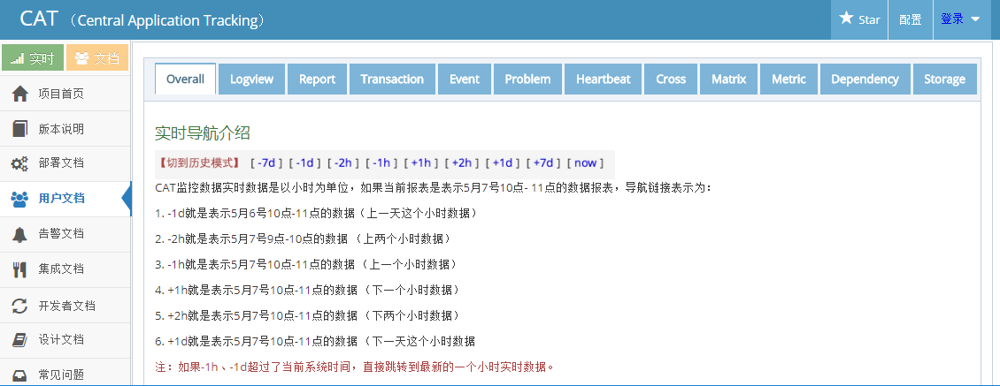
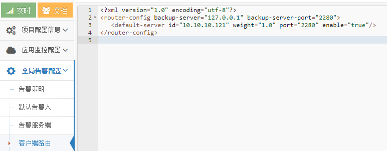
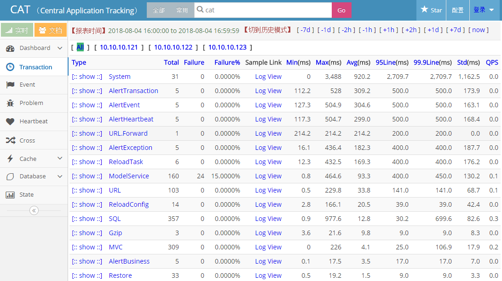

| CAT（Central Application Tracking）是基于Java开发的实时应用监控平台，包括实时应用监控，业务监控。关于CAT的具体介绍可移步到CAT官网进行查阅。 |
1. 环境清单
CentOS 7 Java 8 Maven 3.5 MySQL 5.7 CAT 2.0.0 Tomcat 7.0
2. 安装 CAT
下载CAT安装包：
将cat-home-2.0.0.war部署到tomcat并重命名为cat.war：
1
| $ mv cat-home-2.0.0.war tomcat-7.0.90/webapps/cat.war
|
2.1 配置 CAT
在Linux系统安装时，CAT应用要求对/data/appdatas/cat和/data/applogs/cat路径有读写权限。
| CAT服务端应用会对这两个目录进行读写操作，因此需要首先创建这两个目录。并且应确保启动CAT应用的用户对这两个目录有读写权限。
|
下载CAT的源码包：
1
| $ wget -O cat-2.0.0.tar.gz https://codeload.github.com/dianping/cat/tar.gz/v2.0.0
|
解压缩：
解压缩完成后得到cat-2.0.0目录。其中cat-2.0.0/script目录中存放的是CAT客户端和服务端安装所需的一些配置文件：
| 文件 |
说明 |
| client.xml |
所有的CAT客户端都需要配置这个配置文件。它用于配置CAT部署的服务端信息。只有客户端配置了这个配置文件，客户端才能正确连接到CAT服务器端。该文件的部署路径是/data/appdatas/cat（该部署路径不能更改，并且启动客户端的程序的用户需要对此目录有读写权限）。
特殊的，部署CAT应用的服务端同时也是一个客户端，也需要配置该配置文件。 |
| server.xml |
CAT服务端的配置文件。即安装CAT应用的服务器才需要配置。该文件的部署路径是/data/appdatas/cat（该部署路径不能更改，并且启动CAT应用的用户需要对此目录有读写权限）。 |
| datasources.xml |
CAT服务端的配置文件。即安装CAT应用的服务器才需要配置。该配置文件用于配置CAT链接MySQL数据库的信息。该文件的部署路径是/data/appdatas/cat（该部署路径不能更改）。 |
| Cat.sql |
CAT应用所需的MySQL数据库脚本。需将此脚本导入MySQL数据库中。 |
将cat-2.0.0/script目录中的client.xml、datasources.xml、server.xml配置文件复制到目录/data/appdatas/cat中：
1
| $ cp client.xml server.xml datasources.xml /data/appdatas/cat/
|
客户端client.xml的配置内容如下：
1 2 3 4 5 6 7 8 9 10
| <?xml version="1.0" encoding="utf-8"?> <config mode="client" xmlns:xsi="http://www.w3.org/2001/XMLSchema" xsi:noNamespaceSchemaLocation="config.xsd"> <servers> port：CAT服务端接收客户端数据的端口（不允许更改） http-port：CAT应用部署到的容器的端口（tomcat的端口） --> <server ip="10.10.10.121" port="2280" http-port="8080" /> </servers> </config>
|
服务端server.xml的配置内容如下：
1 2 3 4 5 6 7 8 9 10 11 12 13 14 15 16 17
| <?xml version="1.0" encoding="utf-8"?> hdfs-machine：是否启用HDFS存储 job-machine：是否为报告工作机（开启生成汇总报告和统计报告，只需要一台服务机开启此功能） alert-machine：是否为报警机（开启各类报警监听, 只需要一台服务机开启此功能） --> <config local-mode="false" hdfs-machine="false" job-machine="true" alert-machine="false"> local-report-storage-time：本地报告文件存放时长, 单位为（天） local-logivew-storage-time：本地日志文件存放时长, 单位为（天） --> <storage local-base-dir="/data/appdatas/cat/bucket/" local-report-storage-time="7" local-logivew-storage-time="7"/> <console default-domain="Cat" show-cat-domain="true"> <remote-servers>10.10.10.121:8080</remote-servers> </console> </config>
|
数据源datasources.xml的配置内容如下：
1 2 3 4 5 6 7 8 9 10 11 12 13 14 15 16 17 18 19 20 21 22 23 24 25 26 27 28 29 30 31 32 33 34 35
| <?xml version="1.0" encoding="utf-8"?> <data-sources> <data-source id="cat"> <maximum-pool-size>8</maximum-pool-size> <connection-timeout>3s</connection-timeout> <idle-timeout>10m</idle-timeout> <statement-cache-size>1000</statement-cache-size> <properties> <driver>com.mysql.jdbc.Driver</driver> <url><![CDATA[jdbc:mysql://10.10.10.121:3306/cat_schema]]></url> <user>root</user> <password>123654</password> <connectionProperties><![CDATA[useUnicode=true&characterEncoding=UTF-8&autoReconnect=true&socketTimeout=120000]]></connectionProperties> </properties> </data-source> <data-source id="app"> <maximum-pool-size>8</maximum-pool-size> <connection-timeout>3s</connection-timeout> <idle-timeout>10m</idle-timeout> <statement-cache-size>1000</statement-cache-size> <properties> <driver>com.mysql.jdbc.Driver</driver> <url><![CDATA[jdbc:mysql://10.10.10.121:3306/cat_schema]]></url> <user>root</user> <password>123654</password> <connectionProperties><![CDATA[useUnicode=true&characterEncoding=UTF-8&autoReconnect=true&socketTimeout=120000]]></connectionProperties> </properties> </data-source> </data-sources>
|
创建cat_schema数据库：
1
| CREATE DATABASE IF NOT EXISTS cat_schema DEFAULT CHARSET utf8 COLLATE utf8_general_ci
|
选择数据库cat_schema：
导入Cat.sql到cat_schema数据库：
1
| SOURCE /home/fanlychie/cat-2.0.0/script/Cat.sql
|
编辑tomcat配置文件：
1
| $ vim tomcat-7.0.90/conf/server.xml
|
找到Connector的配置行，添加URIEncoding="utf-8"。如下：
1 2 3 4
| <Connector port="8080" protocol="HTTP/1.1" connectionTimeout="20000" redirectPort="8443" URIEncoding="utf-8" />
|
2.2 启动 CAT
启动tomcat：
1
| $ ./tomcat-7.0.90/bin/startup.sh
|
访问：http://10.10.10.121:8080/cat

配置操作需要用户登入系统，每次的登录账户名和密码保持一致即可。如catadmin/catadmin。
2.3 客户端路由设置
依次打开配置 --> 全局告警配置 --> 客户端路由修改id为CAT部署的服务器ip：

3. 集群搭建
上面介绍的是CAT应用的单点模式部署。接下来介绍CAT的集群模式搭建方式。
3.1 部署概览
| IP |
角色 |
| 10.10.10.121 |
控制台、告警端、任务机 |
| 10.10.10.122 |
消费机 |
| 10.10.10.123 |
消费机 |
| 10.10.10.121作为前端控制台，如果使用了域名，只需将域名解析到此IP地址。
|
按以上搭建单点模式的方式，分别在10.10.10.121、10.10.10.122、10.10.10.123部署CAT。部署完成后，先不要启动tomcat。接下来做集群配置。
3.2 客户端client.xml配置
10.10.10.121、10.10.10.122、10.10.10.123的client.xml配置一样，具体如下：
1 2 3 4 5 6 7 8 9 10 11 12
| <?xml version="1.0" encoding="utf-8"?> <config mode="client" xmlns:xsi="http://www.w3.org/2001/XMLSchema" xsi:noNamespaceSchemaLocation="config.xsd"> <servers> port：CAT服务端接收客户端数据的端口（不允许更改） http-port：CAT应用部署到的容器的端口（tomcat的端口） --> <server ip="10.10.10.121" port="2280" http-port="8080" /> <server ip="10.10.10.122" port="2280" http-port="8080" /> <server ip="10.10.10.123" port="2280" http-port="8080" /> </servers> </config>
|
3.3 服务端server.xml配置
10.10.10.121的server.xml配置，具体如下：
1 2 3 4 5 6 7 8 9 10 11 12 13 14 15 16 17
| <?xml version="1.0" encoding="utf-8"?> hdfs-machine：是否启用HDFS存储 job-machine：是否为报告工作机（开启生成汇总报告和统计报告，只需要一台服务机开启此功能） alert-machine：是否为报警机（开启各类报警监听, 只需要一台服务机开启此功能） --> <config local-mode="false" hdfs-machine="false" job-machine="true" alert-machine="true"> local-report-storage-time：本地报告文件存放时长, 单位为（天） local-logivew-storage-time：本地日志文件存放时长, 单位为（天） --> <storage local-base-dir="/data/appdatas/cat/bucket/" local-report-storage-time="7" local-logivew-storage-time="7"/> <console default-domain="Cat" show-cat-domain="true"> <remote-servers>10.10.10.121:8080,10.10.10.122:8080,10.10.10.123:8080</remote-servers> </console> </config>
|
10.10.10.122、10.10.10.123的server.xml配置一样，具体如下：
1 2 3 4 5 6 7 8 9 10 11 12 13 14 15 16 17
| <?xml version="1.0" encoding="utf-8"?> hdfs-machine：是否启用HDFS存储 job-machine：是否为报告工作机（开启生成汇总报告和统计报告，只需要一台服务机开启此功能） alert-machine：是否为报警机（开启各类报警监听, 只需要一台服务机开启此功能） --> <config local-mode="false" hdfs-machine="false" job-machine="false" alert-machine="false"> local-report-storage-time：本地报告文件存放时长, 单位为（天） local-logivew-storage-time：本地日志文件存放时长, 单位为（天） --> <storage local-base-dir="/data/appdatas/cat/bucket/" local-report-storage-time="7" local-logivew-storage-time="7"/> <console default-domain="Cat" show-cat-domain="true"> <remote-servers>10.10.10.121:8080,10.10.10.122:8080,10.10.10.123:8080</remote-servers> </console> </config>
|
| 服务端server.xml的配置主要是job-machine和alert-machine属性值配置的不同。 |
3.4 启动 CAT
分别启动10.10.10.121、10.10.10.122、10.10.10.123的tomcat：
1
| $ ./tomcat-7.0.90/bin/startup.sh
|
10.10.10.121作为控制台服务，只需访问：http://10.10.10.121:8080/cat

3.5 客户端路由设置
10.10.10.121作为控制台服务，只需配置这台即可。
依次打开配置 --> 全局告警配置 --> 客户端路由修改id为CAT部署的服务器ip：

其中10.10.10.121作为备份，正常情况下不作为消费机（即不起消费数据的作用），仅当CAT集群中的其它节点（如这里的10.10.10.122、10.10.10.123节点）都挂掉之后才会对数据进行消费。
该配置会自动同步到CAT集群中的其它节点（如这里的10.10.10.122、10.10.10.123节点）。
配置完成后，重启10.10.10.121服务器的CAT应用容器（即重启tomcat）。